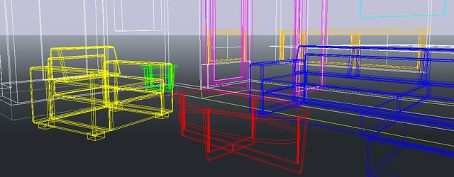
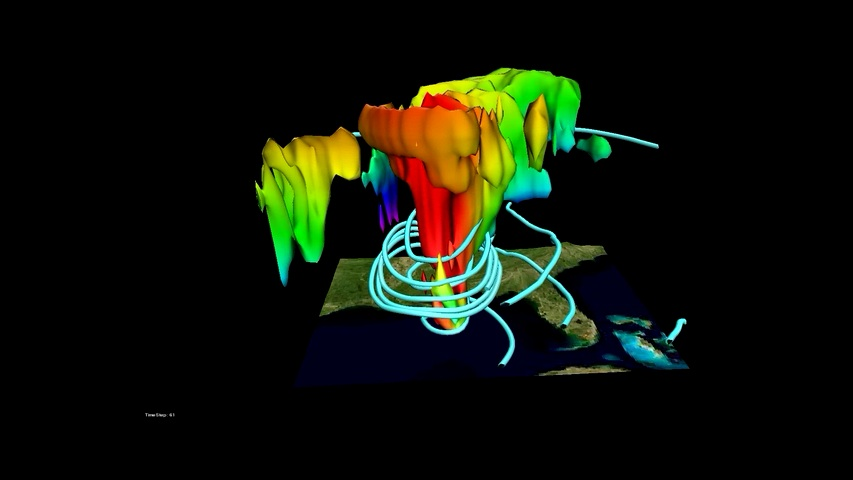
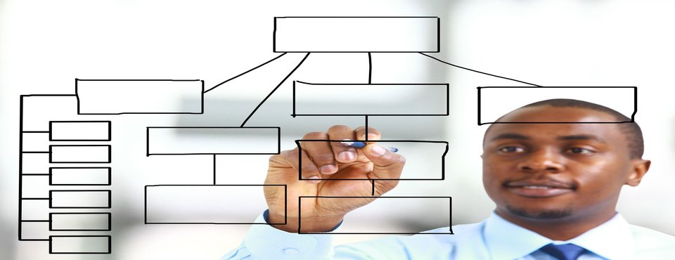
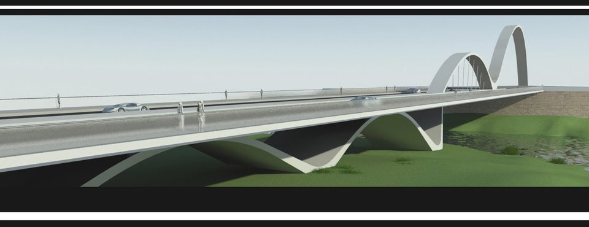
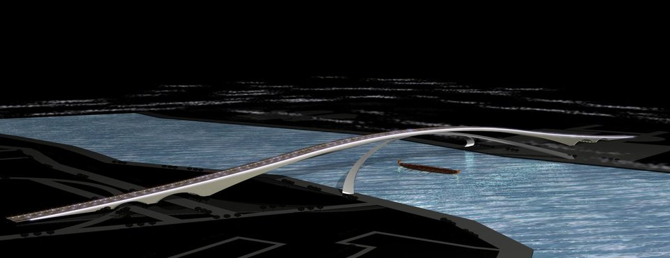
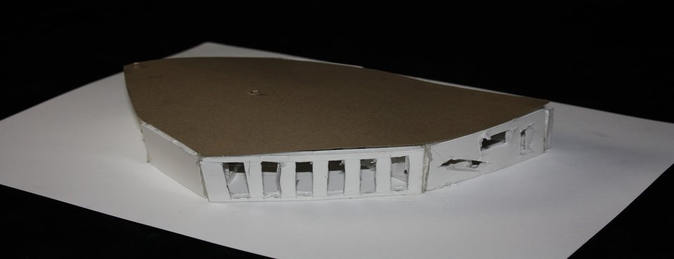
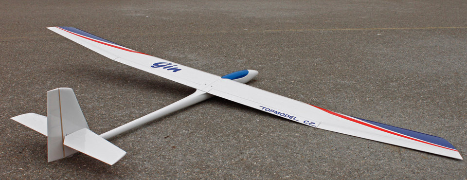

- 
- 
- 
- 
- 

- 
- 

Moduliranje i simulacija
Sadržaj kolegija Modeliranje i simulacija
Vrste modela. Procesni modeli. Fizikalna ograničenja modeliranja - model participacije. Matematički
modeli - anticipativni i inkurzivni modeli. Modeli elektrotehničkih komponenti. Model povezivosti.
Aproksimativni modeli i skupovna matematika. Kvalitativni i kvantitativni aspekti modela. Modeli
softverskih procesa. Hidrodinamički modeli. Modeli jediničnih procesa - laserski procesi. Bond graf
metoda modeliranja. Modeli i srazmjeri. Verbalni modeli. Modeli i korespondentne diferencijalne
jednadžbe. Diskretizacija rješenja. Modeli dinamike fluida. Rubni problemi i uvjeti diskretizacija.
više...
Projekti
Pješački most u Osijeku 3D model
Pametna rasvjeta
Analitički modeli reda veličine i kvalitativno kvantitativni modeli
Molekularna dinamika
Stadion Gradski vrt 3D model
Rekonstrukcija dvorca Pejačević
Koncept rasvjete interijera i eksterijera
više...
loomen
Napisati nešto i ostaviti hiperverzu prema loomenu gdje se sadržaj kolegija i nalazi
više...